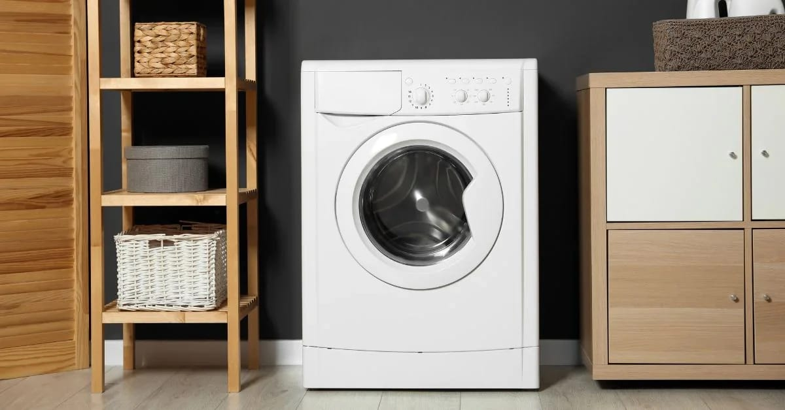
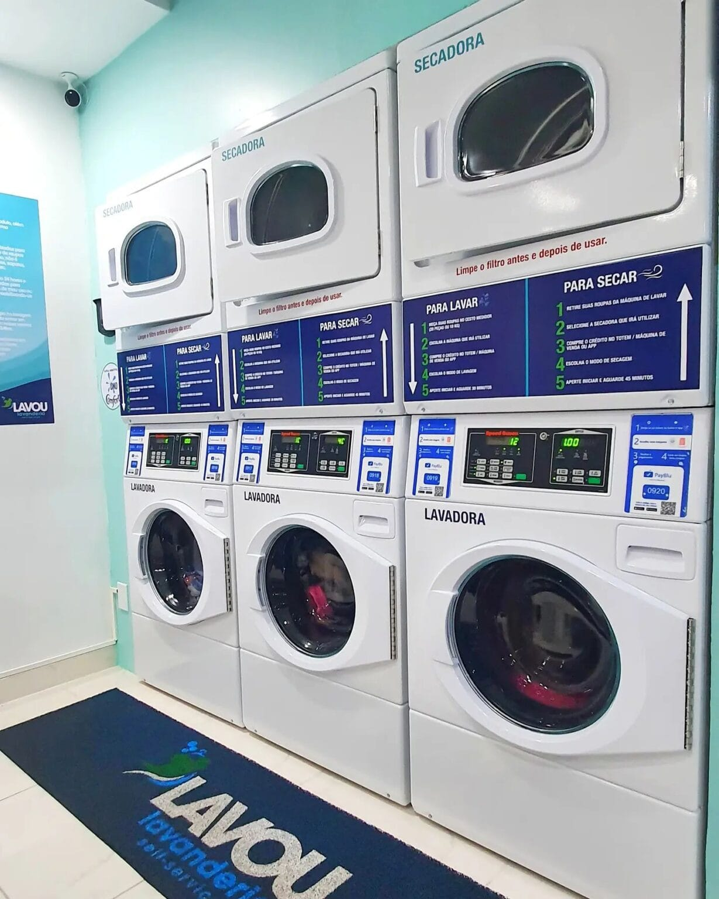
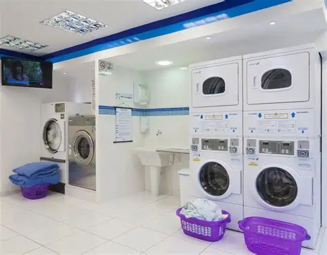

Bem-Vindo(a) a Lavanderia Brilho
Conheça os tipos de lavagem que oferecemos!
Lavagem Comum
Esta é a lavagem tradicional, indicada para roupas do dia a dia, como camisetas, calças, jeans e roupas de trabalho. Utiliza ciclo padrão de água e detergentes apropriados para remover sujeiras leves a moderadas, garantindo roupas limpas e bem cuidadas sem danificar os tecidos mais resistentes.
Lavagem Delicada
Lavagem Delicada Indicada para roupas sensíveis, como seda, lã, roupas com bordados, rendas ou tecidos finos. O processo utiliza movimentos suaves, menor temperatura de água e detergentes especiais, prevenindo o desgaste das fibras e preservando cores e texturas.
Lavagem Rapida (pouca roupa)
Ideal para pequenas quantidades de roupas que precisam de limpeza rápida, como uma muda de roupa ou peças específicas. O ciclo é mais curto, economiza água e energia, e mantém a higiene das roupas sem comprometer a qualidade da lavagem.
Lavagem Premium
Serviço completo para roupas que exigem cuidado extra. Combina técnicas de lavagem delicada, uso de produtos especiais para conservação de tecidos e fragrâncias diferenciadas. Indicado para roupas de alto valor, ternos, vestidos de festa e peças que precisam de máxima preservação de cor, textura e forma.